All outcomes
Load
Explore baseline
Quantitative
baseline <- data_model %>%
filter(visit == 1)
summ_cat <- baseline %>%
summarize_categorical(use_labels = TRUE, group_col = "allocation_group") %>%
filter(Level == 1) %>%
select(Variable, Freq, Percent, allocation_group) %>%
pivot_wider(
names_from = allocation_group,
values_from = c(Freq, Percent)
)
summ_cat <- summ_cat %>%
select(
Variable,
`Grupo Placebo (N)` = `Freq_Grupo A`,
`% (A)` = `Percent_Grupo A`,
`Grupo Eclipta (N)` = `Freq_Grupo B`,
`% (B)` = `Percent_Grupo B`)
summ_cat # A tibble: 7 × 5
Variable `Grupo Placebo (N)` `% (A)` `Grupo Eclipta (N)` `% (B)`
<chr> <int> <dbl> <int> <dbl>
1 visit 37 100 38 100
2 hypertension 6 16.2 12 31.6
3 hypercholesterolemia 25 67.6 21 55.3
4 hypertrigliceridemia 16 43.2 20 52.6
5 insulin 9 24.3 9 23.7
6 drugs_w_loss 8 21.6 11 28.9
7 drugs_w_gain 1 2.7 3 7.9summ_num <- baseline %>%
summarize_numerical(use_labels = TRUE, group_col = "allocation_group") %>%
select(-N) %>%
pivot_wider(
names_from = allocation_group,
values_from = `Mean (95% CI)`)Warning: Values from `Mean (95% CI)` are not uniquely identified; output will contain
list-cols.
• Use `values_fn = list` to suppress this warning.
• Use `values_fn = {summary_fun}` to summarise duplicates.
• Use the following dplyr code to identify duplicates.
{data} |>
dplyr::summarise(n = dplyr::n(), .by = c(Variable, allocation_group)) |>
dplyr::filter(n > 1L)summ_num %>% print(n = Inf)# A tibble: 36 × 3
Variable `Grupo A` `Grupo B`
<chr> <list> <list>
1 Circunferência abdominal (cm) <chr [1]> <chr [1]>
2 Idade <chr [1]> <chr [1]>
3 alcohol_dose <chr [1]> <chr [1]>
4 IMC (Kg/m²) <chr [1]> <chr [1]>
5 Kcal de carboidratos <chr [1]> <chr [1]>
6 compliance_score_visit <chr [1]> <chr [1]>
7 Proteína C Reativa (mg/L) <chr [2]> <chr [2]>
8 Resultado DASS-21 Ansiedade <chr [1]> <chr [1]>
9 Resultado DASS-21 Depressão <chr [1]> <chr [1]>
10 Resultado DASS-21 Stress <chr [1]> <chr [1]>
11 duration_difference <chr [1]> <chr [1]>
12 Resultado ECAP <chr [1]> <chr [1]>
13 Escore EVS <chr [1]> <chr [1]>
14 Kcal de lipídeo <chr [1]> <chr [1]>
15 handgrip <chr [1]> <chr [1]>
16 Kcal total <chr [1]> <chr [1]>
17 Fosfatase alcalina (U/L) <chr [1]> <chr [1]>
18 ALT (U/L) <chr [1]> <chr [1]>
19 AST (U/L) <chr [1]> <chr [1]>
20 Colesterol total (mg/dL) <chr [1]> <chr [1]>
21 GGT (U/L) <chr [1]> <chr [1]>
22 Glicemia de jejum (mg/dL) <chr [1]> <chr [1]>
23 Hemoglobina A1c (%) <chr [1]> <chr [1]>
24 HDL (mg/dL) <chr [1]> <chr [1]>
25 HOMA-IR <chr [1]> <chr [1]>
26 Insulina (uIU/mL) <chr [1]> <chr [1]>
27 LDL (mg/dL) <chr [1]> <chr [1]>
28 Quick Index <chr [1]> <chr [1]>
29 Triglicerídeos (mg/dL) <chr [1]> <chr [1]>
30 Média MAP <chr [1]> <chr [1]>
31 Ângulo de fase (º) <chr [1]> <chr [1]>
32 Kcal de proteína <chr [1]> <chr [1]>
33 Reatância (Ω) <chr [1]> <chr [1]>
34 Nome completo <chr [1]> <chr [1]>
35 Resistência (Ω) <chr [1]> <chr [1]>
36 Qualidade de vida geral <chr [1]> <chr [1]>compare_groups(data = baseline, group_col = "allocation_group", use_labels = TRUE, return_df = FALSE)Loading required package: gtWarning in compare_groups(data = baseline, group_col = "allocation_group", :
Skipping visit : only one level present.Warning in compare_groups(data = baseline, group_col = "allocation_group", :
Skipping compliance_score_visit : one or both groups are constant or missing.Warning in compare_groups(data = baseline, group_col = "allocation_group", :
Skipping duration_difference : one or both groups are constant or missing.| Hypothesis Test Results | |||
|---|---|---|---|
| Comparison of allocation_group | |||
| Variable | Test Type | Test Statistic | P-value |
| Nome completo | t-test | -0.33 | 0.7450 |
| Intervenção completa? | Chi-squared test | 0.18 | 0.6715 |
| Idade | t-test | -0.58 | 0.5641 |
| Sexo | Fisher's exact test | NA | 0.1908 |
| hypertension | Chi-squared test | 1.66 | 0.1981 |
| hypercholesterolemia | Chi-squared test | 0.73 | 0.3915 |
| hypertrigliceridemia | Chi-squared test | 0.34 | 0.5602 |
| insulin | Chi-squared test | 0.00 | 1.0000 |
| drugs_w_loss | Chi-squared test | 0.22 | 0.6428 |
| drugs_w_gain | Fisher's exact test | NA | 0.6148 |
| Qualidade de vida geral | t-test | -0.09 | 0.9295 |
| Resultado DASS-21 Depressão | t-test | -0.30 | 0.7617 |
| Resultado DASS-21 Ansiedade | t-test | 0.92 | 0.3585 |
| Resultado DASS-21 Stress | t-test | -0.72 | 0.4737 |
| Resultado ECAP | t-test | 1.48 | 0.1424 |
| Circunferência abdominal (cm) | t-test | 0.89 | 0.3774 |
| IMC (Kg/m²) | t-test | -0.75 | 0.4541 |
| Média MAP | t-test | -1.15 | 0.2551 |
| Resistência (Ω) | t-test | -1.37 | 0.1763 |
| Reatância (Ω) | t-test | 0.24 | 0.8077 |
| Ângulo de fase (º) | t-test | 1.56 | 0.1240 |
| handgrip | t-test | 1.70 | 0.0927 |
| Escore EVS | t-test | -0.37 | 0.7103 |
| alcohol_dose | t-test | 0.75 | 0.4551 |
| Kcal de carboidratos | t-test | 3.31 | 0.0016 |
| Kcal de proteína | t-test | 2.66 | 0.0105 |
| Kcal de lipídeo | t-test | 2.38 | 0.0210 |
| Kcal total | t-test | 3.57 | 0.0008 |
| Proteína C Reativa (mg/L) | t-test | -0.87 | 0.3852 |
| AST (U/L) | t-test | 0.60 | 0.5495 |
| ALT (U/L) | t-test | 1.43 | 0.1589 |
| GGT (U/L) | t-test | 0.37 | 0.7103 |
| Fosfatase alcalina (U/L) | t-test | -1.03 | 0.3076 |
| Colesterol total (mg/dL) | t-test | 0.10 | 0.9241 |
| LDL (mg/dL) | t-test | 0.53 | 0.5954 |
| Hemoglobina A1c (%) | t-test | 0.63 | 0.5296 |
| Triglicerídeos (mg/dL) | t-test | 0.14 | 0.8858 |
| HDL (mg/dL) | t-test | -1.15 | 0.2523 |
| Glicemia de jejum (mg/dL) | t-test | -0.06 | 0.9512 |
| Insulina (uIU/mL) | t-test | 0.81 | 0.4209 |
| HOMA-IR | t-test | 0.86 | 0.3963 |
| Quick Index | t-test | -0.17 | 0.8650 |
| Proteína C Reativa (mg/L) | t-test | -0.97 | 0.3363 |
Plots
ggplot(data = baseline, aes(x = allocation_group, y = kcal)) +
geom_violin(alpha = 0.5, trim = FALSE) +
geom_boxplot(width = 0.5, outlier.colour = "red", alpha = 0.5) +
geom_jitter(width = 0.2, alpha = 0.5) +
coord_flip() +
labs(
title = "Distribuição da ingestão energétical total por grupo de alocação",
x = "Ingestão total (Kcal)",
y = "Grupo de alocação"
) +
theme_minimal()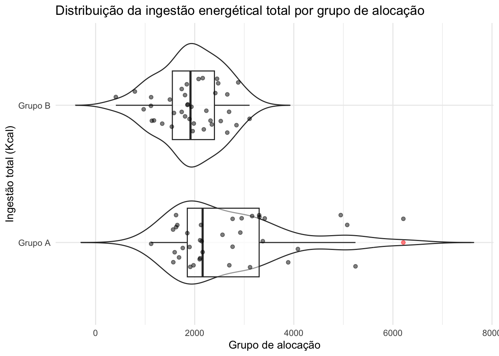
ggplot(data = baseline, aes(x = allocation_group, y = carbs_kcal)) +
geom_violin(alpha = 0.5, trim = FALSE) +
geom_boxplot(width = 0.5, outlier.colour = "red", alpha = 0.5) +
geom_jitter(width = 0.2, alpha = 0.5) +
coord_flip() +
labs(
title = "Distribuição da ingestão de carboidratos em kcal por grupo de alocação",
x = "Ingestão total (Kcal)",
y = "Grupo de alocação"
) +
theme_minimal()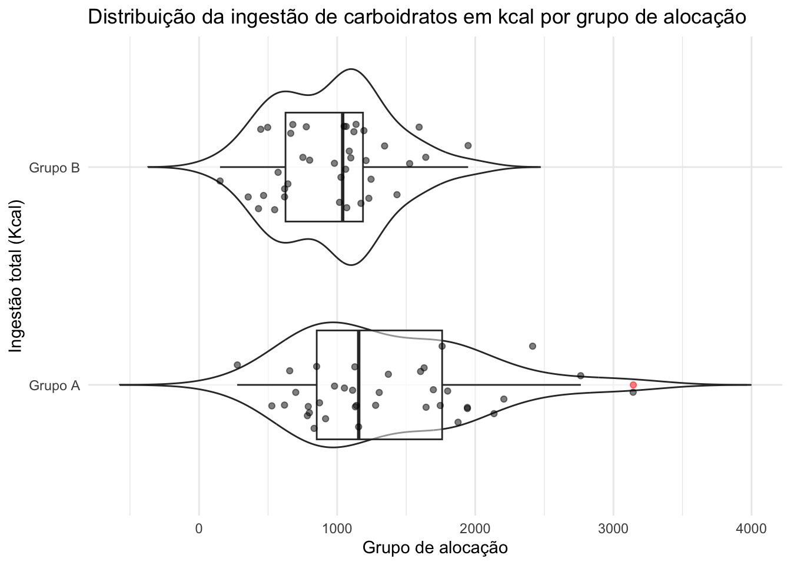
ggplot(data = baseline, aes(x = allocation_group, y = protein_kcal)) +
geom_violin(alpha = 0.5, trim = FALSE) +
geom_boxplot(width = 0.5, outlier.colour = "red", alpha = 0.5) +
geom_jitter(width = 0.2, alpha = 0.5) +
coord_flip() +
labs(
title = "Distribuição da ingestão de proteínas em kcal por grupo de alocação",
x = "Ingestão total (Kcal)",
y = "Grupo de alocação"
) +
theme_minimal()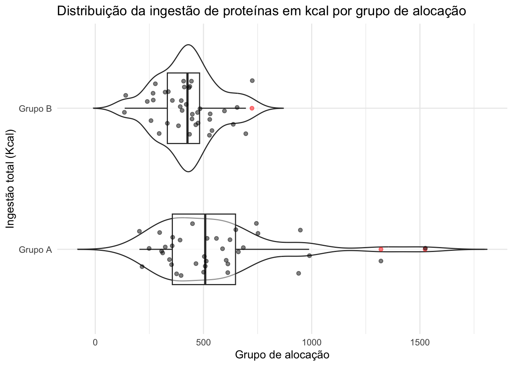
ggplot(data = baseline, aes(x = allocation_group, y = fat_kcal)) +
geom_violin(alpha = 0.5, trim = FALSE) +
geom_boxplot(width = 0.5, outlier.colour = "red", alpha = 0.5) +
geom_jitter(width = 0.2, alpha = 0.5) +
coord_flip() +
labs(
title = "Distribuição da ingestão de gorduras em kcal por grupo de alocação",
x = "Ingestão total (Kcal)",
y = "Grupo de alocação"
) +
theme_minimal()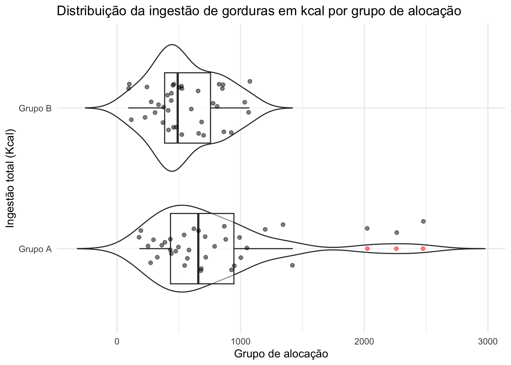
Treatment vs Orthogonal Contrasts
How the Interpretation Changes:
➤ Treatment Contrasts (contr.treatment):
- Intercept: Mean AST for Grupo B at Visit 1 (reference).
- Main effect of allocation_group: Difference between Grupo A and Grupo B at Visit 1.
- Main effect of visit2: Change from Visit 1 to Visit 2 for Grupo B.
- Interaction term: How the visit effect differs between groups.
➤ Orthogonal Contrasts (contr.sum and contr.poly):
- Intercept: Grand mean across groups and visits.
- Main effect of allocation_group: Deviation of each group from the grand mean (Grupo A = +, Grupo B = −).
- visit.L: Linear trend across visits, centered.
- visit.Q: Quadratic trend.
- Interactions: How the linear and quadratic trends differ between groups.
Explore outcomes
contrasts(data_model$allocation_group) <- contr.sum(2) # Sum-to-zero for group
contrasts(data_model$visit) <- contr.poly(3) # Orthogonal polynomial for visitAST
data_model %>% select(starts_with("lab")) %>% names() [1] "labs_ast" "labs_alt" "labs_ggt"
[4] "labs_alkp" "labs_cholesterol" "labs_ldl"
[7] "labs_hba1c" "labs_triglycerides" "labs_hdl"
[10] "labs_glucose" "labs_insulin" "labs_homa_ir"
[13] "labs_quick_index" Simple
ggplot(data_model, aes(x = as.factor(visit), y = labs_ast)) +
geom_boxplot(width = 0.5, outlier.shape = NA, alpha = 0.6) +
geom_jitter(width = 0.2, alpha = 0.5, color = "black") +
facet_wrap(~ allocation_group) +
theme_minimal() +
geom_smooth(
aes(group = allocation_group),
method = "lm",
se = TRUE,
linewidth = 1
)Warning: Removed 10 rows containing non-finite outside the scale range
(`stat_boxplot()`).`geom_smooth()` using formula = 'y ~ x'Warning: Removed 10 rows containing non-finite outside the scale range
(`stat_smooth()`).Warning: Removed 10 rows containing missing values or values outside the scale range
(`geom_point()`).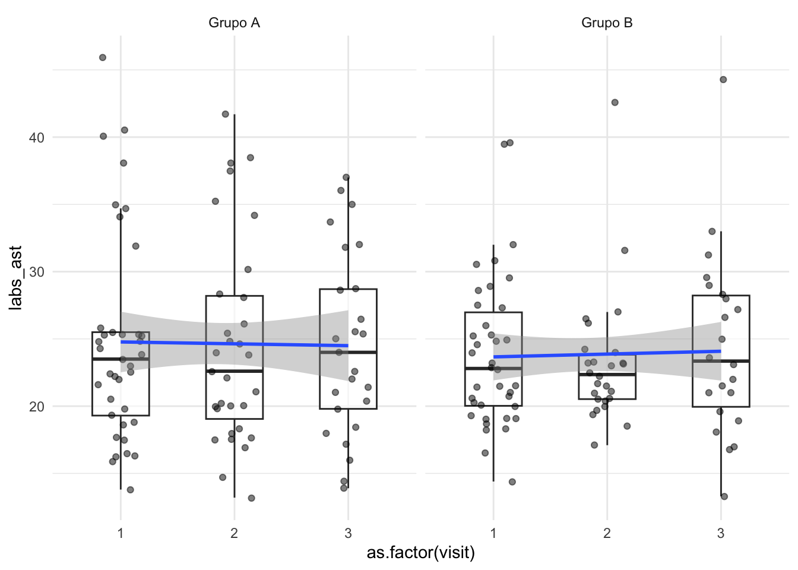
ggplot(
data = data_model,
aes(
x = as.factor(visit),
y = labs_ast,
group = record_id,
)
) +
geom_line(alpha = 0.5) +
geom_point(alpha = 0.7) +
geom_smooth(
aes(group = allocation_group),
method = "lm",
se = TRUE,
linewidth = 1
) +
facet_wrap(~ allocation_group)`geom_smooth()` using formula = 'y ~ x'Warning: Removed 10 rows containing non-finite outside the scale range
(`stat_smooth()`).Warning: Removed 8 rows containing missing values or values outside the scale range
(`geom_line()`).Warning: Removed 10 rows containing missing values or values outside the scale range
(`geom_point()`).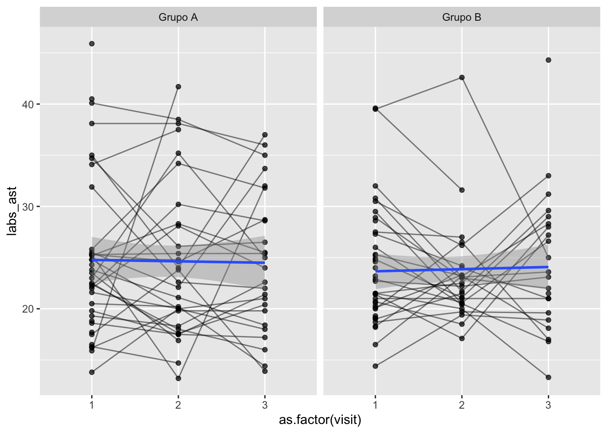
ast <- lmer(log1p(labs_ast) ~ allocation_group + visit + (1 | record_id), data = data_model)
summary(ast)Linear mixed model fit by REML. t-tests use Satterthwaite's method [
lmerModLmerTest]
Formula: log1p(labs_ast) ~ allocation_group + visit + (1 | record_id)
Data: data_model
REML criterion at convergence: 1.3
Scaled residuals:
Min 1Q Median 3Q Max
-2.70166 -0.55039 -0.06509 0.56398 2.75024
Random effects:
Groups Name Variance Std.Dev.
record_id (Intercept) 0.03018 0.1737
Residual 0.03335 0.1826
Number of obs: 179, groups: record_id, 75
Fixed effects:
Estimate Std. Error df t value Pr(>|t|)
(Intercept) 3.197e+00 2.503e-02 7.098e+01 127.715 <2e-16 ***
allocation_group1 9.732e-03 2.471e-02 6.912e+01 0.394 0.695
visit.L 1.802e-03 2.509e-02 1.135e+02 0.072 0.943
visit.Q 1.367e-02 2.462e-02 1.067e+02 0.556 0.580
---
Signif. codes: 0 '***' 0.001 '**' 0.01 '*' 0.05 '.' 0.1 ' ' 1
Correlation of Fixed Effects:
(Intr) allc_1 vist.L
allctn_grp1 -0.014
visit.L 0.159 -0.026
visit.Q -0.021 0.023 0.120performance::check_model(ast)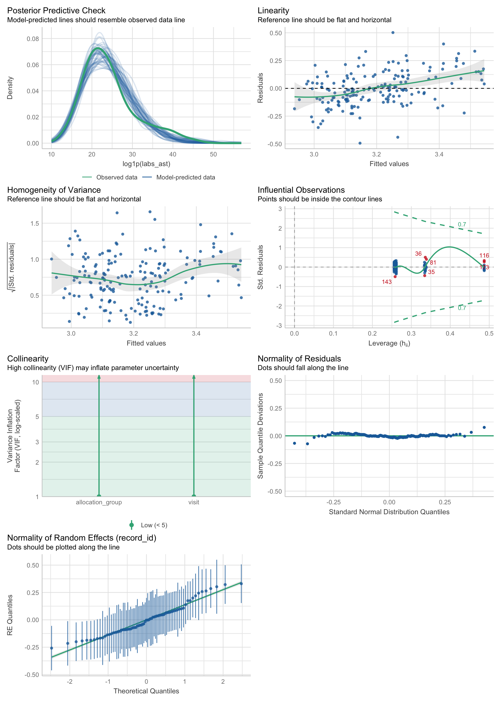
Fixed Effects
| Term | Estimate | Interpretation |
|---|---|---|
| (Intercept) | 24.29 | Mean AST for the grand mean (across groups and visits) |
| allocation_group1 | +0.50 | Difference of Grupo A from the grand mean. Grupo B is coded as -0.50 (sum-to-zero contrast). Not significant (p = 0.464). |
| visit.L | +0.14 | Linear trend across visits (1 → 2 → 3). Not significant (p = 0.832). |
| visit.Q | +0.40 | Quadratic trend (e.g., U-shape or inverted U-shape). Not significant (p = 0.532). |
Key Points for Orthogonal Contrasts
allocation_group1
- Uses sum-to-zero coding (
contr.sum) - Estimate represents how much Grupo A differs from the grand mean.
- To get Grupo B, flip the sign (−0.50).
- Uses sum-to-zero coding (
visit.L and visit.Q
visit.L→ Linear change across visits (Visit 1 → Visit 3). If positive, indicates AST increases linearly.visit.Q→ Quadratic shape. If significant, could mean the variable rises then falls (or vice versa).- Both are orthogonal, meaning each tests a unique part of the variance.
None of the fixed effects are statistically significant:
- Group difference: p = 0.464
- Visit linear trend: p = 0.832
- Visit quadratic trend: p = 0.532
→ Conclusion: No evidence of AST changing significantly across visits or differing between groups.
Random Effects
| Component | Std.Dev | Interpretation |
|---|---|---|
| (Intercept) | 4.836 | Variability in baseline AST across individuals. |
| Residual | 4.743 | Variability within individuals (visit-to-visit). |
→ Substantial variability exists between participants (Intercept SD ≈ 4.8) compared to within-participant variation (Residual SD ≈ 4.7).
Important Detail for Orthogonal Contrasts:
- Intercept: is the grand mean (not the mean of a specific group like in treatment coding).
- Group effects are interpreted relative to the grand mean, not a reference level.
→ If you switch back to treatment contrasts (contr.treatment), the intercept would represent Grupo B (if coded as reference), and the group coefficient would be Grupo A minus Grupo B
Sensitivity check
Analysis of Influential points
Manually:
library(influence.ME)
Attaching package: 'influence.ME'The following object is masked from 'package:stats':
influence# Build influence measures
infl_ast <- influence.ME::influence(ast, group = "record_id")
# Check Cook's distance
cooks <- cooks.distance(infl_ast)
record_ids <- as.character(unique(data_model$record_id))
# Visualize Cook's distance
plot(
cooks,
type = "h",
main = "Cook's Distance per record_id",
ylab = "Cook's Distance",
xlab = "record_id",
las = 2
)
abline(h = 4 / length(cooks), col = "red", lty = 2)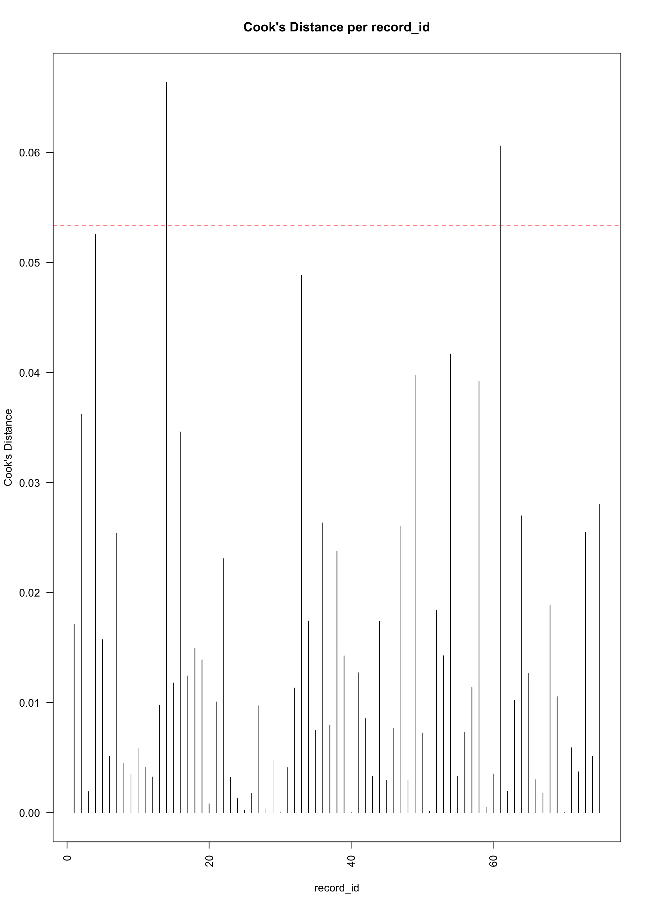
# List top influential IDs
cooks_df <- data.frame(
record_id = record_ids,
cooks_distance = cooks
)
## Identify influential IDs:
## Rule-based (4/N)
influential_ids_rule <- cooks_df %>%
filter(cooks_distance > (4 / length(cooks))) %>%
pull(record_id)
## Top 5 most influential
top_ids <- cooks_df %>%
arrange(desc(cooks_distance)) %>%
slice(1:5) %>%
pull(record_id)
## Combine both (no duplicates)
influential_ids <- unique(c(influential_ids_rule, top_ids))
## Refit model excluding influential IDs
ast_sens <- update(object = ast,
subset = !(record_id %in% influential_ids)
)
summary(ast_sens)Linear mixed model fit by REML. t-tests use Satterthwaite's method [
lmerModLmerTest]
Formula: log1p(labs_ast) ~ allocation_group + visit + (1 | record_id)
Data: data_model
Subset: !(record_id %in% influential_ids)
REML criterion at convergence: -35.7
Scaled residuals:
Min 1Q Median 3Q Max
-2.1025 -0.5363 -0.0456 0.5845 1.8900
Random effects:
Groups Name Variance Std.Dev.
record_id (Intercept) 0.02972 0.1724
Residual 0.02411 0.1553
Number of obs: 166, groups: record_id, 70
Fixed effects:
Estimate Std. Error df t value Pr(>|t|)
(Intercept) 3.17657 0.02460 64.91448 129.105 <2e-16 ***
allocation_group1 0.01405 0.02429 62.98146 0.578 0.565
visit.L -0.01017 0.02240 101.47596 -0.454 0.651
visit.Q 0.01713 0.02175 95.38254 0.788 0.433
---
Signif. codes: 0 '***' 0.001 '**' 0.01 '*' 0.05 '.' 0.1 ' ' 1
Correlation of Fixed Effects:
(Intr) allc_1 vist.L
allctn_grp1 0.004
visit.L 0.158 -0.029
visit.Q -0.021 0.014 0.120performance::check_model(ast_sens)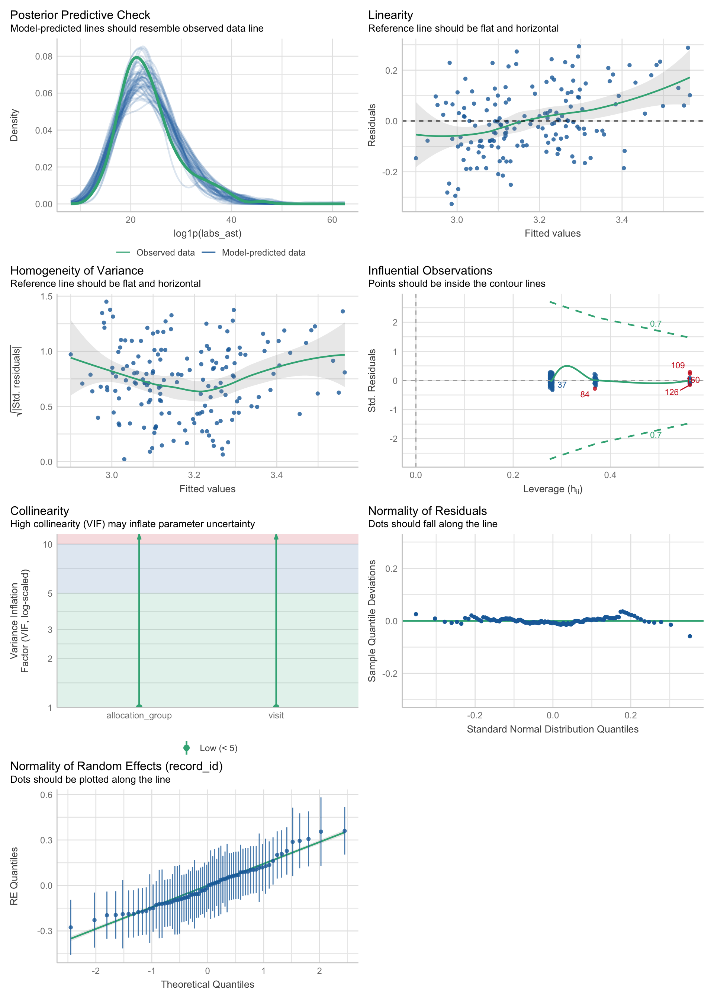
data_model %>%
filter(
!(record_id %in% influential_ids)
) %>%
ggplot(
aes(
x = as.factor(visit),
y = labs_ast,
group = record_id,
)
) +
geom_line(alpha = 0.5) +
geom_point(alpha = 0.7) +
geom_smooth(
aes(group = allocation_group),
method = "lm",
se = TRUE,
linewidth = 1
) +
facet_wrap(~ allocation_group)`geom_smooth()` using formula = 'y ~ x'Warning: Removed 9 rows containing non-finite outside the scale range
(`stat_smooth()`).Warning: Removed 8 rows containing missing values or values outside the scale range
(`geom_line()`).Warning: Removed 9 rows containing missing values or values outside the scale range
(`geom_point()`).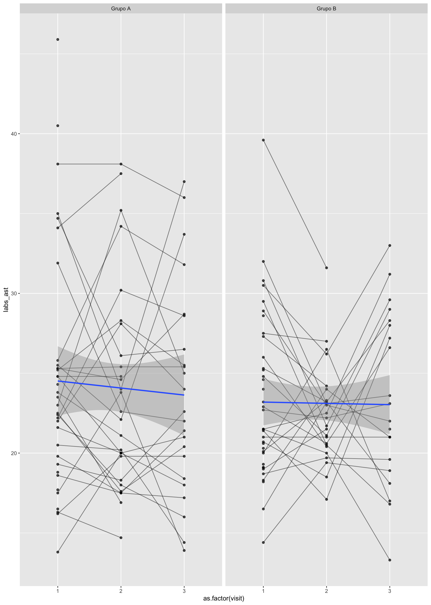
Function:
ast_check <- sensitivity_check_lmer(
model = ast,
data = data_model,
id_var = "record_id",
top_n = 5
)Loading required package: broom.mixed## ✔️ View Cook's distance table:
#result$cooks_table
## ✔️ View influential IDs:
ast_check$influential_ids[1] "14" "61" "4" "33" "54"## ✔️ View comparison of fixed effects:
ast_check$comparison_table# A tibble: 12 × 6
Model term estimate std.error statistic p.value
<chr> <chr> <dbl> <dbl> <dbl> <dbl>
1 Original (Intercept) 3.20 0.0250 128. 1.27e-85
2 Sensitivity (Intercept) 3.18 0.0246 129. 5.41e-80
3 Original allocation_group1 0.00973 0.0247 0.394 6.95e- 1
4 Sensitivity allocation_group1 0.0140 0.0243 0.578 5.65e- 1
5 Original sd__(Intercept) 0.174 NA NA NA
6 Sensitivity sd__(Intercept) 0.172 NA NA NA
7 Original sd__Observation 0.183 NA NA NA
8 Sensitivity sd__Observation 0.155 NA NA NA
9 Original visit.L 0.00180 0.0251 0.0718 9.43e- 1
10 Sensitivity visit.L -0.0102 0.0224 -0.454 6.51e- 1
11 Original visit.Q 0.0137 0.0246 0.556 5.80e- 1
12 Sensitivity visit.Q 0.0171 0.0218 0.788 4.33e- 1Interpretation of the Sensitivity Check
Fixed Effects
None of these changes are large. The magnitude and p-values remain non-significant.
| Term | Original | Sensitivity | Δ Change |
|---|---|---|---|
| (Intercept) | 3.20 | 3.18 | Slightly ↓ |
| allocation_group1 | 0.0097 | 0.014 | ↑ tiny (still NS) |
| visit.L | +0.0018 | -0.0102 | Small flip (still NS) |
| visit.Q | +0.0137 | +0.0171 | Minor ↑ |
Random Effects (Variance Components)
Residual (within-subject) variance decreased substantially after removing influential IDs. This is a signal that the influential IDs were contributing to heteroskedasticity and residual noise.
| Component | Original | Sensitivity | Δ Change |
|---|---|---|---|
| **sd__(Intercept)** | 0.174 | 0.172 | ↓ slightly |
| **sd__Observation** | 0.183 | 0.155 | ↓ noticeably |
What This Means:
- Conclusion and direction of effects are stable — results are robust to these influential points.
- Residual variance reduction suggests improved model fit and less noise.
- Fixed effects estimates changed minimally — no major distortions.
ALT
ggplot(
data = data_model,
aes(
x = as.factor(visit),
y = labs_alt,
group = record_id,
)
) +
geom_line(alpha = 0.5) +
geom_point(alpha = 0.7) +
geom_smooth(
aes(group = allocation_group),
method = "lm",
se = TRUE,
linewidth = 1
) +
facet_wrap(~ allocation_group)`geom_smooth()` using formula = 'y ~ x'Warning: Removed 10 rows containing non-finite outside the scale range
(`stat_smooth()`).Warning: Removed 8 rows containing missing values or values outside the scale range
(`geom_line()`).Warning: Removed 10 rows containing missing values or values outside the scale range
(`geom_point()`).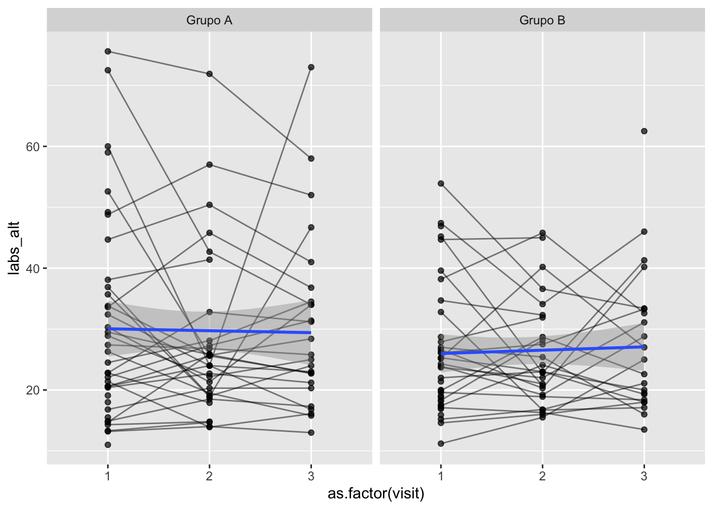
alt <- lmer(log1p(labs_alt) ~ allocation_group + visit + (1 | record_id), data = data_model)
summary(alt)Linear mixed model fit by REML. t-tests use Satterthwaite's method [
lmerModLmerTest]
Formula: log1p(labs_alt) ~ allocation_group + visit + (1 | record_id)
Data: data_model
REML criterion at convergence: 129.3
Scaled residuals:
Min 1Q Median 3Q Max
-2.3264 -0.5369 -0.0828 0.5824 2.2125
Random effects:
Groups Name Variance Std.Dev.
record_id (Intercept) 0.10851 0.3294
Residual 0.05435 0.2331
Number of obs: 179, groups: record_id, 75
Fixed effects:
Estimate Std. Error df t value Pr(>|t|)
(Intercept) 3.274e+00 4.279e-02 7.255e+01 76.509 <2e-16 ***
allocation_group1 3.306e-02 4.240e-02 7.072e+01 0.780 0.438
visit.L 2.827e-03 3.246e-02 1.088e+02 0.087 0.931
visit.Q 4.286e-02 3.161e-02 1.043e+02 1.356 0.178
---
Signif. codes: 0 '***' 0.001 '**' 0.01 '*' 0.05 '.' 0.1 ' ' 1
Correlation of Fixed Effects:
(Intr) allc_1 vist.L
allctn_grp1 -0.004
visit.L 0.133 -0.021
visit.Q -0.022 0.019 0.113performance::check_model(alt)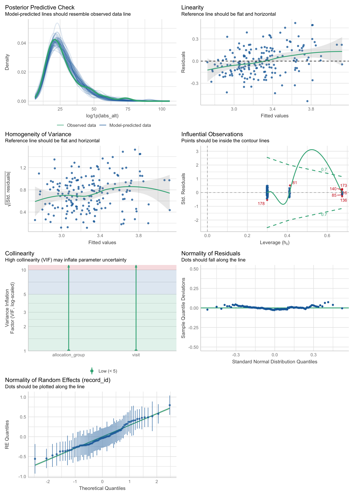
alt_check <- sensitivity_check_lmer(
model = alt,
data = data_model,
id_var = "record_id",
top_n = 5
)
## ✔️ View Cook's distance table:
#result$cooks_table
## ✔️ View influential IDs:
alt_check$influential_ids[1] "33" "58" "75" "63" "5" ## ✔️ View comparison of fixed effects:
alt_check$comparison_table# A tibble: 12 × 6
Model term estimate std.error statistic p.value
<chr> <chr> <dbl> <dbl> <dbl> <dbl>
1 Original (Intercept) 3.27 0.0428 76.5 4.06e-71
2 Sensitivity (Intercept) 3.23 0.0409 79.0 1.73e-67
3 Original allocation_group1 0.0331 0.0424 0.780 4.38e- 1
4 Sensitivity allocation_group1 0.00322 0.0405 0.0797 9.37e- 1
5 Original sd__(Intercept) 0.329 NA NA NA
6 Sensitivity sd__(Intercept) 0.306 NA NA NA
7 Original sd__Observation 0.233 NA NA NA
8 Sensitivity sd__Observation 0.204 NA NA NA
9 Original visit.L 0.00283 0.0325 0.0871 9.31e- 1
10 Sensitivity visit.L -0.00968 0.0300 -0.322 7.48e- 1
11 Original visit.Q 0.0429 0.0316 1.36 1.78e- 1
12 Sensitivity visit.Q 0.0156 0.0288 0.540 5.90e- 1alt_sens <- update(object = alt,
subset = !(record_id %in% influential_ids)
)
performance::check_model(alt_sens)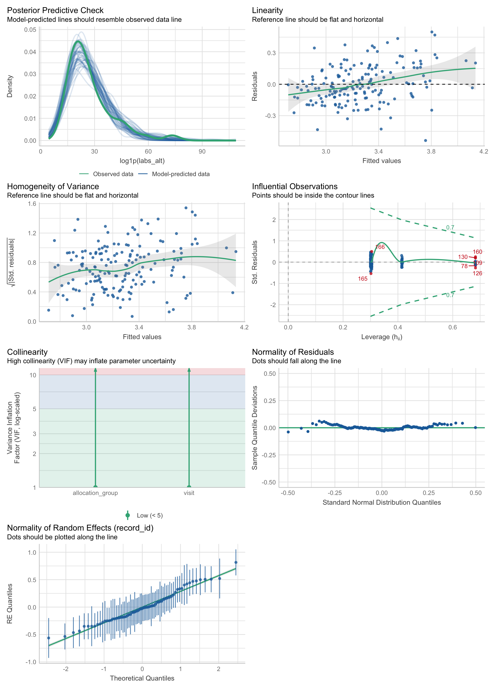